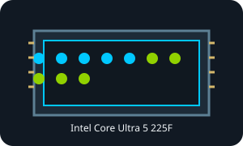

[ INDIVIDUAL RETAIL CPU SKU ]
Intel Core Ultra 5 225F
Arrow Lake-S, Intel Core Ultra 200S Series 2 (2025); 10 cores (6 P-cores + 4 E-cores) / 10 threads; P-core 3.3 GHz; E-core 2.7 GHz; max turbo 4.9 GHz; 20 MB Intel Smart Cache (L3); 65 W base / 121 W max turbo; FCLGA1851. Confirm the complete suffix: each SKU has its own graphics and power behavior.

MODEL IDENTIFICATION: Intel Core Ultra 5 225F, Intel Core Ultra 200S Series 2 Arrow Lake-S desktop SKU (2025). Do not infer specifications from a neighboring suffix variant.
Verified model specifications
| Exact SKU / generation | Intel Core Ultra 5 225F; Core Ultra 200S Series 2, Arrow Lake-S desktop (2025). |
|---|---|
| Cores / threads | 10 cores (6 P-cores + 4 E-cores) / 10 threads; hybrid P-core/E-core, without Hyper-Threading. |
| Frequencies | Base frequencies: P-core 3.3 GHz; E-core 2.7 GHz; maximum turbo frequency: 4.9 GHz. |
| Cache | 20 MB Intel Smart Cache (L3). |
| Processor power | 65 W base / 121 W max turbo. |
| Socket / package | FCLGA1851 (LGA1851), desktop land-grid package. |
| Memory | Dual-channel DDR5, up to DDR5-6400 and 256 GB, subject to DIMM configuration and motherboard validation; DDR4 is unsupported. |
| PCIe | PCIe 5.0 and 4.0; up to 20 CPU-direct lanes (x16 Gen 5 plus x4 Gen 4). Available slots and bifurcation depend on the board. |
| Integrated graphics | No integrated graphics (F-series). |
| Motherboard / BIOS | Intel 800-series LGA1851 board only. Confirm exact CPU support, board revision and minimum BIOS/microcode with the motherboard maker. LGA1700 is incompatible. |
Compatibility and installation
- Match the FCLGA1851 package and chipset; verify the exact model in the motherboard CPU-support list and apply any required BIOS/microcode update.
- Use DDR5 only; check capacity, DIMM population, speed, and QVL for the specific board.
- Choose cooling and power delivery for the recorded base and maximum turbo limits; check chassis airflow and cooler mount.
- No integrated GPU; a compatible discrete graphics card is required for video output.
- Check the complete processor marking and suffix; do not force package alignment or treat a related SKU as interchangeable.
Service & archival notes
Record the physical package marking, S-spec, stepping, motherboard and revision, BIOS, memory population, cooling, source revision and test conditions.
Intel ARK sources
- Intel ARK model lookup — Intel Core Ultra 5 225FOfficial Intel ARK search for this exact SKU; match the result and suffix to the installed part.
- Intel ARK family lookup — Core Ultra 200S desktop 225FOfficial Intel ARK search for this Series 2 desktop model/family and corresponding specification entry.
- Gamers Nexus — Intel Core Ultra 5 245K CPU Review & Benchmarks vs. 5700X3D, 13700KIndependent video review; treat as supplementary context, not primary manufacturer documentation.
Confirm final fit with the Intel ARK listing and motherboard vendor's exact CPU support list/BIOS notes.